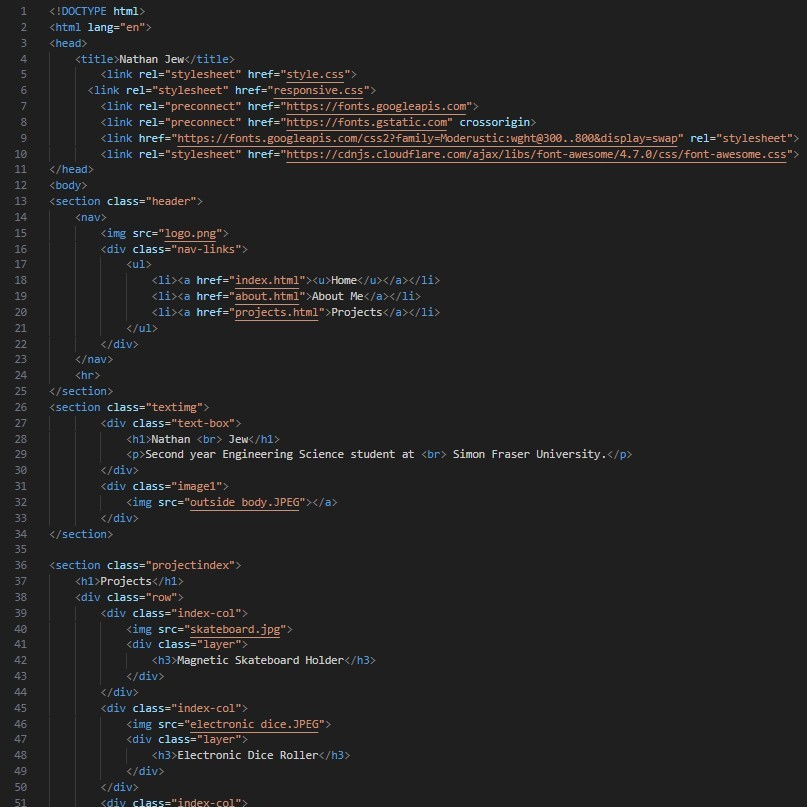

Separation Smart Counter
- Designed and built a device that sends phone notifications when separated, applicable in dieting, burglary detection, and medication tracking
- Designed and wired the circuit with an ESP32 microcontroller on a breadboard, then tested to ensure reliable counter updates and notifications
- Modelled and 3D-printed a protective shell casing in SolidWorks

Personalized Website
- Self-taught HTML and CSS through online tutorials and practice to develop a personalized website to showcase projects, skills, and interests
- Learned and utilized GitHub to import files, store them in a repository, and connect to a domain name
- Constantly updating with new information and projects

LED Dice Face Randomizer
- Soldered and assembled a PCB-based circuit with LED lights to generate random dice face values from 1-6
- Gained experience and operated lab equipment, including DC power supplies, oscilloscopes, function generators, and digital multimeters
- Demonstrated the result powered by a 9V battery to teaching assistants, verifying functionality and reliability

Magnetic Skateboard Backpack
- Designed and modelled magnetic brackets in SolidWorks to securely attach a skateboard to a backpack
- Assembled and tested prototypes using 3D-printed components, evaluating security, attachment strength, and overall ease of use
- Collaborated in a team of 8 to develop the product and deliverables, including an instructional video and a poster presentation, showcased to professional engineers
- Recognized by the course professor as the most unique project and idea